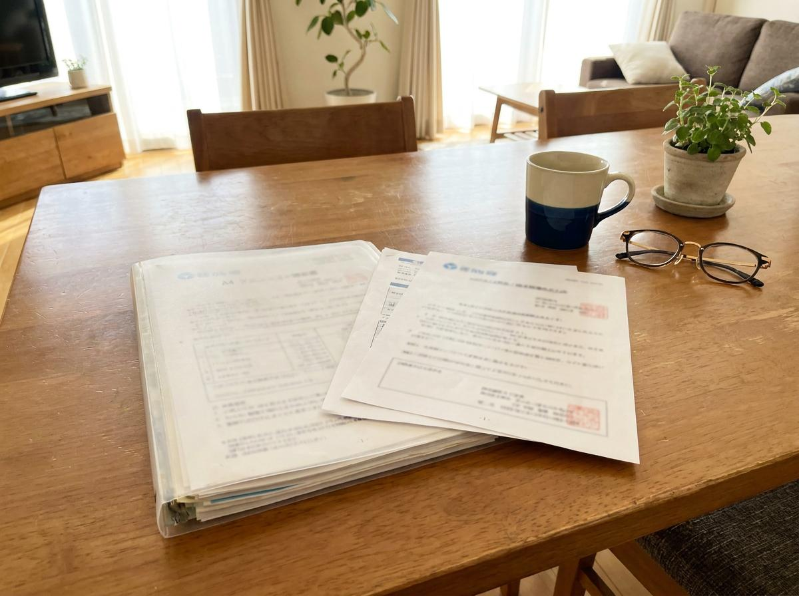

年金と税金の書類整理相談公認会計士・税理士 野本裕美

年金と税金の書類整理相談
源泉徴収票、医療費、保険料控除、ふるさと納税…。バラバラになりがちな書類を、税理士がご自宅でまとめて確認し、確定申告が必要かどうかをお伝えします。
年金や医療費などの書類を税理士がご自宅で確認し、確定申告を検討した方がよいことや、詳しく確認した方がよいことを整理する訪問相談です。
税額を確定したり、確定申告書を作成したりするサービスではありません。原則として、直近1年分の所得税・住民税を対象にします。
個別の確認結果と、次にすることを3〜5項目程度、A4・1枚程度の「税金チェック結果」にまとめてお渡しします。面談当日は、大まかな傾向としての見立てもあわせて口頭でお伝えします。
まずはフォームからお申し込みください。
相談内容を確認し、合ったメニューをご案内します。
振込またはクレジットカード決済でお支払いいただきます。
面談日の7日前までにご提出をお願いしています。
札幌市内・隣接エリアへお伺いします。
「税金チェック結果」をお渡しします。
結果送付後、簡単なご質問に1回お答えします。
資料提出期限後に提出された資料は、結果に反映できない場合があります。
必要な場合は、追加業務の内容と料金を事前に説明します。
札幌市内への訪問 120分（税込・訪問料込み）
どれが必要か分からない場合は、当日一緒に確認します。ただし、限られた時間ですべての書類を詳しく確認することはできません。書類が多い場合は、今回確認するものを一緒に選び、残ったものは今後の確認事項として整理します。

目安：A4ファイル1冊または手提げ袋1つ程度（書類30点程度まで）
これを超える場合や、大量の書類の仕分けから必要な場合は、別途「お金と大切な書類の仕分けサポート」をご案内します（同じ訪問時に追加する場合：60分追加11,000円／90分追加16,500円）。原本は原則として持ち帰りません。
すべて揃っていなくてもご相談いただけます。
お申し込みフォームは現在準備中です。決まり次第つながります。
ご希望の日程が混み合う場合がございます。お早めのご相談をおすすめしています。